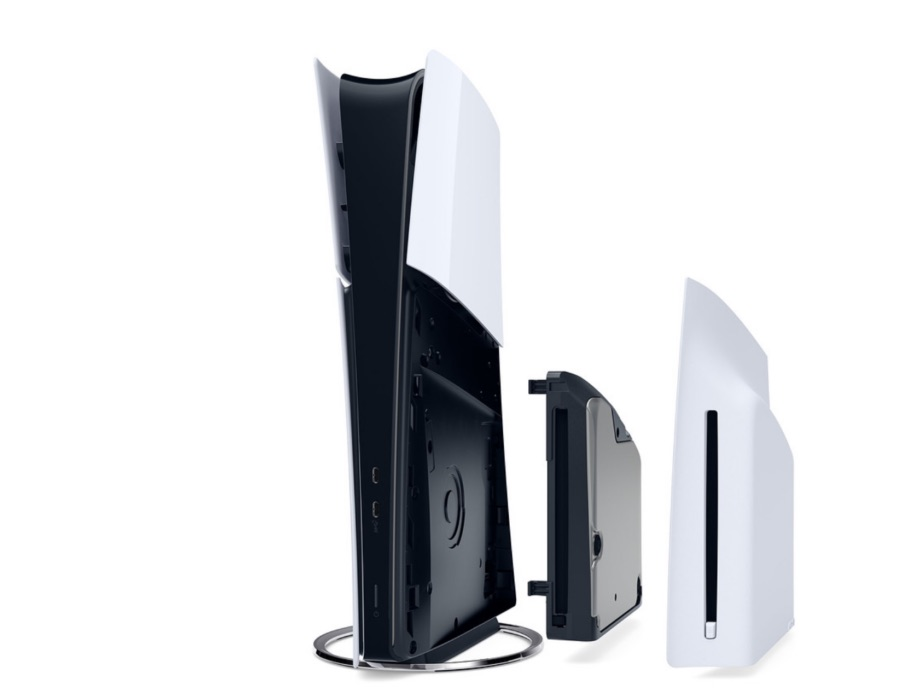

PS5 Slim: veja data de lançamento do console da Sony

Quem está de olho nas notícias certamente já sabe que o PS5 Slim vai chegar às lojas em novembro, mas a Sony ainda não especificou uma data para que isso aconteça. Porém, um especialista em vazamentos deu a dica de quando isso deve acontecer.
Segundo informações divulgadas por um dataminer conhecido como billbil-kun, o PS5 Slim aparentemente deve chegar às lojas dos Estados Unidos em 8 de novembro. Ou seja, se esse dado for real, a Sony deve fazer um pronunciamento confirmando tal data já nas próximas semanas.

Outro ponto mencionado pelo informante é que aparentemente o console vai chegar às lojas em um pacote trazendo Spider-Man 2. Caso confirmado, a estratégia pode fazer sentido, tendo em vista que o game do Cabeça de Teia chega às lojas já nesta sexta-feira (20) e consegue dar uma boa prova do poder do console.
Por fim, billbil-kun ainda relatou que, na quarta-feira (18), a Amazon começou a aceitar reservas para essa versão do console. Com isso, temos aqui mais um indício de que possivelmente a data de 8 de novembro pode acabar se confirmando.
Quanto vai custar o PS5 Slim?
Para aqueles que estão pensando em adquirir o console, a Sony já revelou quais são os preços de cada uma das versões do console, bem como alguns acessórios que serão vendidos separadamente. Confira:
- PS5 com leitor de discos incluso: US$ 499,99;
- PS5 Digital Edition: US$ 449,99;
- Leitor de discos separado: US$ 74,99;
- Nova base para o PS5 ficar em pé: US$ 29,99.
A nova versão do PS5 chega com o mesmo preço da versão original. Além disso, a Sony planeja substituir o modelo lançado em 2020 pela edição com design revisado. Ou seja, dentro de alguns meses, o novo PS5 será o modelo padrão no mercado.